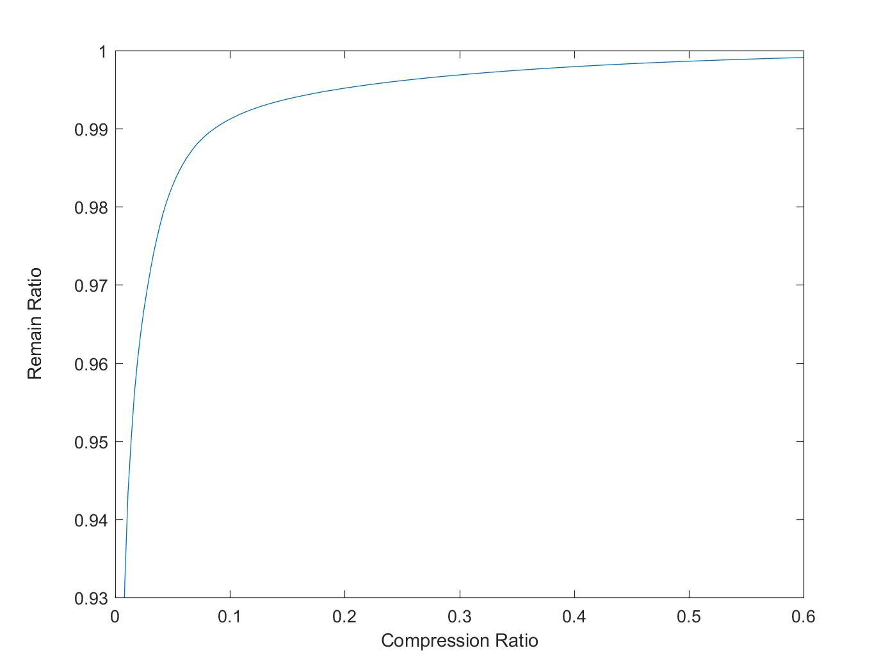

May 30, 2017
This article offers a derivation of singular value decomposition (SVD) and its application in image compression. First introduced is the concept and properties of a symmetric matrix. These properties are exploited to apply to any matrix such that the matrix transformation can be decomposed with SVD into a simple scaling transformation. The simplicity of the scaling transformation offers opportunities to accurately approximate the information of the matrix. Such approximation can be applicable to the compression of images. An example of SVD inspired image compression is presented at the end.
Linear transformations can be difficult to work with. If the appropriate basis is provided to any given linear transformation, however, the linear transformation becomes a mere scaling transformation. When a linear transformation is reduced to a scaling transformation, the transformation is simpler to understand and the simplicity provides opportunities for modifying the transformation in helpful ways. Fortunately, every linear transformation can be reduced to a scaling transformation with appropriate choice of input and output bases. The mathematical formulation below will describe how every linear transformation can be represented in terms of a scaling transformation with an appropriate set of new bases.
It is first important to note that any linear transformation can be represented by a matrix. That is, a linear transformation from to can take the form of an matrix. The idea of a linear transformation having the simple function of scaling relates directly to eigenvalues and eigenvectors. If a matrix is not square, however, it will not have eigenvalues. In order to work with eigenvalues the matrix will need to be represented in some square form. A guess for a useful representation is or . Both of these resulting matrices are square. It is also important to realize they are both symmetric. Symmetric matrices have particular properties when it comes to eigenvalues and eigenvectors. These properties are now explored.
Suppose is a symmetric matrix of dimensions . It will not be proven here, but has all real eigenvalues. For a symmetric matrix the property can be exploited. Given two distinct eigenvalues of ,
That is, for any two distinct eigenvalues of , any corresponding eigenvectors are orthogonal. In other words, all eigenspaces corresponding to distinct eigenvalues are orthogonal eigenspaces. Another crucial property that will not be proven is that is complete. That means any eigenvalue of multiplicity corresponds to an eigenspace of dimension .
These properties can be combined to realize that an orthonormal basis for can be formed from a set of eigenvectors of . This is because there are a total of eigenvectors. For an eignevector of mulitplicity an orthonormal basis can be formed for the corresponding eigenspace of dimesion using Gram-Schmidt or another method. Each eigenspace is orthogonal to the others. Thus the orthonormal bases for the eigenspaces can be put into a set, forming an orthonormal basis for .
There is one final property of symmetric matrices that will be established. Since , the eigenspace for the zero-eigenvalue is equivalent to the non-trivial kernal of . With any element of the zero-eigenspace it is the case that and since is an eigenvector it is non-zero so it is an element of the non-trivial kernal of . This equivalence implies that the zero-eigenspace has the same dimension ( ) as the kernal of . Since is complete, the multiplicity of the zero-eigenvalue is the same as the dimension of the zero-eigenspace, that is . With a total of (all real) eigenvalues there must be non-zero eigenvalues. Because all eigenspaces are othogonal, the eigenvectors for non-zero eigenvalues must be othogonal to the zero-eigenspace, and together with the basis for the zero-eigenspace they must complete a basis for . As such, these eigenvectors for non-zero eigenvalues must form a basis for the othogonal complement of the zero-eigenspace or equivalently the kernal. The orthogonal complement of the kernal is the corange. Hence the eigenvectors for the non-zero eigenvalues form a basis for the corange (and range) of , while the eigenvectors for the zero eigenvalues form a basis for the kernal (and cokernal) of . Together, the eigenvectors for the eigenvalues form a basis for .
Now that the properties of symmetric matrices have been established, the focus becomes how to take advantage of these properties with the symmetric matrices and to decompose into the desired scaling transformation. Suppose is an eigenvalue and an eigenvector of . Then
This means every non-zero eigenvalue of is also one for , and a corresponding eigenvector for is where is a corresponding eigenvector for . The eigenvectors of for the zero-eigenvalue can also be found as . Likewise,
Every non-zero eigenvalue of is also one for , and a corresponding eigenvector for is where is a corresponding eigenvector for . The eigenvectors of for the zero-eigenvalue can also be found as . Hence and have identical non-zero eigenvalues and closely related corresponding eigenvectors.
With matrix input and output subspace analysis, the below relationships can be established.
It is evident that the rank of and is . Since symmetrix matrices have rank equal to the number of non-zero eigenvalues, and both have non-zero eigenvalues. The eigenvalue and eigenvector relationships between and will soon be useful.
As the goal is to express as a scaling transformation, it may be helpful to first attempt to express and as scaling transformations. Beginning with , a new basis for the input and output vector space is needed. This means an appropriate new set of basis vectors for given that has dimensions . If the columns of a matrix are the new basis vectors then the vector is the input vector expressed in terms of the new basis, while is the output vector expressed in the new basis. For a scaling transformation it must be that . Thus the input vector must be an eigenvector. With this condition in mind perhaps if the new basis vectors were eigenvectors then any input vector could be expressed as an eigenvector. An eigenvector basis is possible because eigenvectors of the symmetric matrix are able to form an orthonormal basis for . Hence the linear transformation of can be expressed as
where the columns of form an orthonormal eigenvector basis for . By choosing an orthonormal basis it is the case that and the new scaling transformation is expressed as . To prove that this transformation is indeed a scaling transformation meaning that is a diagonal matrix, the form is examined column wise, with as the column index.
Since the columns of form a basis they are linearly independent and therefore the only way to for the previous equation to be true is if all coefficients of the columns are zero. This means for any column of
showing that is a diagonal matrix with eigenvalue entries.
The linear transformation can similarly be expressed as a scaling transformation as where the columns of form an othonormal eigenvector basis for , and the diagonal values of are the eigenvalues of .
In order to change the input and output bases for the matrix itself the form will be necessary where is the input vector, the output vector, the new input basis, and the new output basis. The difference between input and output basis is necessary because the transformation may not be square so the input and output vector spaces may differ. The matrices and are possibilities for and respectively worth exploring, keeping in mind that the goal is to find a matrix with diagonal form. Plugging in for and for
The following two points are relevent.
and are both diagonal matrices with identical (eigenvalue) entries. Thus .
The only (not necessarily square) matrix, , that will commute with a diagonal matrix, , is another diagonal matrix or the zero matrix.
The two points above lead to the conclusion that must be either the desired diagonal matrix or the zero matrix. The following analysis applies regardless whether or not is a diagonal or zero matrix. Looking at column-wise
The right hand side of the above comes from the fact that has zero entries everywhere outside the diagonal. Since the column is an eigenvector of , and since the column is an eigenvector of corresponding to the same eigenvalue as , the above is reformulated as
Taking the norm of both sides
where because is an unit eigenvector. Thus each non-zero diagonal entry of is the square root of the same diagonal entry of and . These diagonal entries of are called the singular values of .
It appears substituting and for and respectively results in a diagonal linear transformation as desired! With the input change of basis and the output change of basis the form is now
where the columns of form an orthonormal basis for and the columns of form an orthonormal basis for . Since and have non-zero eigenvalues, has non-zero singular values. These singular values appear on the top left diagonal entries of the matrix in decreasing order. This scaling transformation and its change of bases and constitute a decomposition of called the singular value decomposition.
The decomposition shown above is called the thick SVD, and it yields three matrices with a total of
entries. Since is a diagonal matrix with non-zero diagonals, the columns of when multiplied by , are multiplied by zero. These columns from and the corresponding zero rows of can thus be removed without affecting the integrity of the decomposition. Likewise, the columns of and the zero columns of can also be removed. In this case the new decomposition called the thin SVD yields three matrices with a total of
entries. This number of entries is likely smaller than and further compression is applicable through the SVD.
The SVD is useful in the context of lossy data compression. This is because if the data is a linear transformation in the form of a matrix, an approximate linear transformation can be calculated by transforming into the diagonal transformation through the SVD. Then, some of the smaller diagonal entries of , that is the smaller singular values of , can be removed from without significantly altering the linear transformation. The approximation is justified because the small diagonal values of correspond to small and relatively unimportant scalings in the diagonal transformation. If only retains the largest singular values then reconstucting by the SVD will yield an approximate linear transformation for .
The advantage of approximating the matrix is that for every singular value of removed from , two corresponding vectors can be removed as well, one from and one from . In other words, if the largest singular values of are chosen for approximation, only the corresponding two sets of vectors are necessary to retain. This means that for singular values kept,
data points are retained. This can significantly reduce the number of necessary data points. We define the 'compression ratio' as
Since the singular values are the scalings factors of the transformation, the Euclidian norm of the singular values can be interpreted as a measure of the amount of information contained in the transformation. This particular norm has the name 'frobenius' norm. By taking the frobenius norm of an approximated matrix and dividing it by the frobenius norm of the original matrix, the result can be thought of as the proportion of information of the original matrix still contained in the approximate matrix. We thus define the 'remain ratio' as
An black and white image can be represented as a matrix with the th entry having a value between and representing the darkness of the th pixel. Moreover, a colored image can be represented with multiple matrices. The colored image is split into three matrices, the first matrix corresponding to the red layer of the image, the second matrix to the green layer, and the third matrix to the blue layer. Each entry in each matrix is a number between and to represent how much of the particular color is present in the RGB makeup of the correspoding pixel.
Each color layer in the form of a matrix can be viewed as a linear transformation. The SVD data compression technique is thus applicable to compress each layer. Note that the compression ratio is the same for all color layers of the original matrix since the same number of singular values will be kept for each layer. Of course commercial image compression is more complex than this.
This example approximates a colored image by using the SVD compression technique for four different compression ratios. The four corresponding approximated images are shown. The number of singular values kept is equal to the rank of the approximated matrix. A plot of the retain ratio versus the compression ratio is also displayed.
The more singular values kept in the modified matrix, the more information retained in the compressed image. The table below shows the relation between the rank, compression ratio, and remain ratio.
| Rank | Compression Ratio | Remain Ratio |
|---|---|---|
| 200 | 0.5561 | 0.9989 |
| 50 | 0.1390 | 0.9934 |
| 20 | 0.0556 | 0.9846 |
| 5 | 0.0139 | 0.9502 |
As seen in the table, keeping singular values will keep % of the information of the original image, while the compression ratio is surprisingly low, only about %, which means the modified image occupies just only half the space of the original one. At the other end of the ranks, rank yields an image retaining % of the information, but the image is barely recognizable. Comparing the images of for ranks and it becomes evident how much our recognition depends upon the many small image details. Just as the difference in information between the two images is a small % yet the images appear dramatically different, so too do the genes between chimps and humans differ only by % yet traits and appearance differ dramatically.
The example above should demonstrate some applicability of SVD. The mathematical formulation of the SVD was intended to offer an additional perspective and additional meaning for origin, nature, and purpose of the SVD than is usually offered in introductory textbooks. Suggestions for improvement and sources of confusion are welcomed in the comments below.
clear all
Img = imread('Monkey Selfie.jpg');
Img = im2double(Img);
Red = Img(:,:,1);
Green = Img(:,:,2);
Blue = Img(:,:,3);
ranks = [200,50,20,5,2];
for ii = 1:length(ranks)
figure
r = ranks(ii);
%Red SVD
[U_red,S_red,V_red] = svd(Red);
U_red_thin = U_red(:,1:r);
S_red_mod = Mod_Matrix(S_red,r);
S_red_thin = S_red_mod(1:r,1:r);
V_red_thin = V_red(:,1:r);
Mod_red_thin = U_red_thin * S_red_thin * V_red_thin';
%Green SVD
[U_green,S_green,V_green] = svd(Green);
U_green_thin = U_green(:,1:r);
S_green_mod = Mod_Matrix(S_green,r);
S_green_thin = S_green_mod(1:r,1:r);
V_green_thin = V_green(:,1:r);
Mod_green_thin = U_green_thin * S_green_thin * V_green_thin';
%Blue SVD
[U_blue,S_blue,V_blue] = svd(Blue);
U_blue_thin = U_blue(:,1:r);
S_blue_mod = Mod_Matrix(S_blue,r);
S_blue_thin = S_blue_mod(1:r,1:r);
V_blue_thin = V_blue(:,1:r);
Mod_blue_thin = U_blue_thin * S_blue_thin * V_blue_thin';
%Reconstruct Image
Mod_Img_thin = cat(3,Mod_red_thin,Mod_green_thin,Mod_blue_thin);
imshow(Mod_Img_thin)
endclear all
Img = imread('Monkey Selfie.jpg');
Img = im2double(Img);
Red = Img(:,:,1);
Green = Img(:,:,2);
Blue = Img(:,:,3);
[m,n] = size(Red);
ranks = [1:360];
RemainRatio = zeros(1,length(ranks));
CompRatio = ranks * (m+n+1)/(m*n);
for ii = 1:length(ranks)
s_red = svds(Red,ranks(ii));
s_green = svds(Green,ranks(ii));
s_blue = svds(Blue,ranks(ii));
Remain_Red_Ratio = norm(s_red)/norm(Red,'fro');
Remain_Green_Ratio = norm(s_green)/norm(Green,'fro');
Remain_Blue_Ratio = norm(s_blue)/norm(Blue,'fro');
RemainRatio(1,ii) = (Remain_Red_Ratio + Remain_Green_Ratio + Remain_Blue_Ratio)/3;
ii
end
plot(CompRatio,RemainRatio)function Approx_S = Mod_Matrix(S,r)
Sigmas = diag(S);
Length_sigmas = length(Sigmas);
Approx_sigmas = Sigmas;
Approx_sigmas(r+1:end) = 0;
[R_s,C_s] = size(S);
Approx_S = zeros(R_s,C_s);
Approx_S(1:Length_sigmas,1:Length_sigmas) = diag(Approx_sigmas);
end
(1) “Cool Linear Algebra: Singular Value Decomposition”. 2013, May 29. Retrieved from http://andrew.gibiansky.com/blog/mathematics/cool-linear-algebra-singular-value-decomposition/
(2) "Relating the Trace and Frobenius Matrix Norms". 2005, August 31, Jason D. M. Rennie. Retrieved from http://qwone.com/~jason/writing/traceFrobenius.pdf
(3) "DNA: Comparing Humans and Chimps". American Museum of Natural History. Retrieved from http://www.amnh.org/exhibitions/permanent-exhibitions/human-origins-and-cultural-halls/anne-and-bernard-spitzer-hall-of-human-origins/understanding-our-past/dna-comparing-humans-and-chimps/